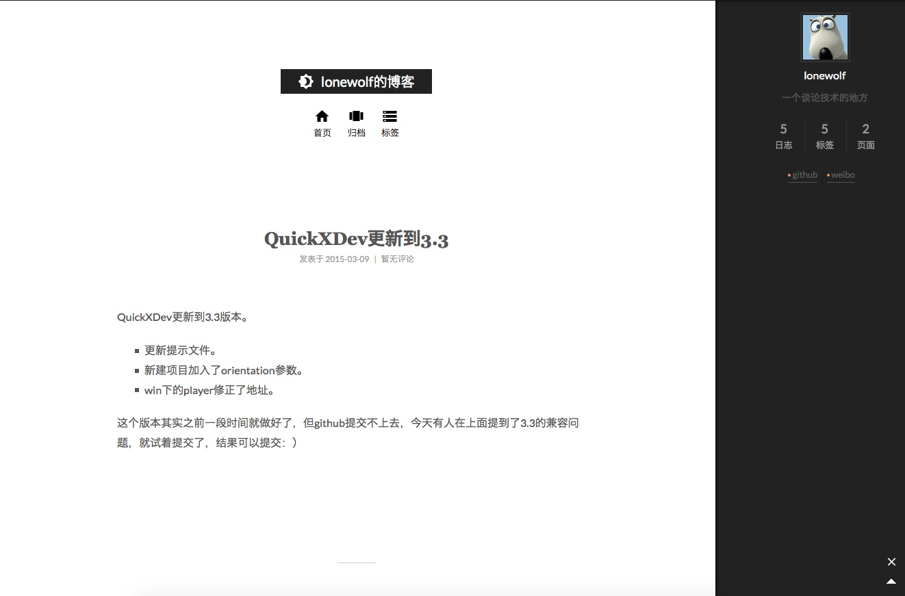
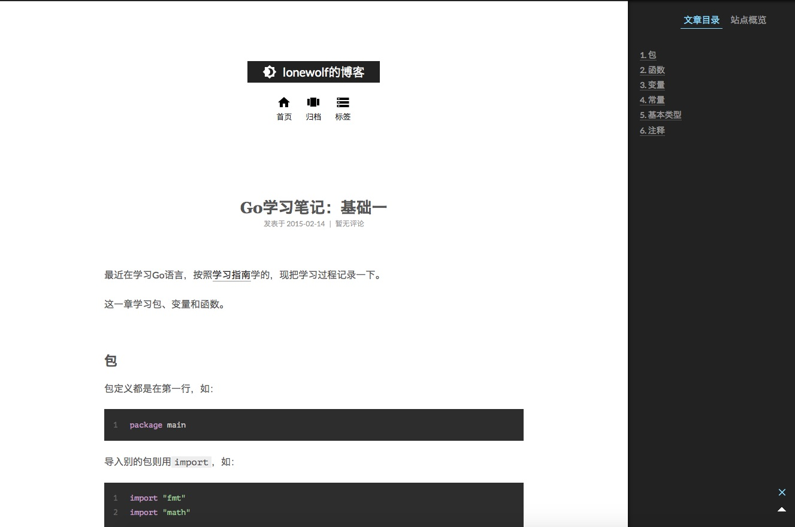

新博客
原链接地址：http://lonewolf.me/content/2016/12/26/new-blog-style.html
原创博客，转载请注明。
cwiki
这个拖了好久，终于把博客的构建程序做出来了。觉得还不错，按自己的意愿弄。
地址：https://github.com/leitwolf/cwiki。
新域名
前段时间在万网看到我的博客me域名竟然是可买的状态，马上下手，哈哈。 http://lonewolf.me。
原链接地址：http://lonewolf.me/content/2016/12/26/new-blog-style.html
原创博客，转载请注明。
这个拖了好久，终于把博客的构建程序做出来了。觉得还不错，按自己的意愿弄。
地址：https://github.com/leitwolf/cwiki。
前段时间在万网看到我的博客me域名竟然是可买的状态，马上下手，哈哈。 http://lonewolf.me。
原链接地址：http://lonewolf.me/content/2016/03/08/winxin-error.html
原创博客，转载请注明。
这几天做了一个微信的邀请函，用到了分享。
因为这次用了egret引擎，以前是lufylegend引擎，所以代码都得重写，不过也是参照以前的，连参数也是。
配置好后运行看到 config:ok ，但点击分享之后就是不出现自定义的标题之类的。
昨天从下午测试到晚上都不行，搞得昨晚都睡不好。
今天早上起来后用纯js实现了一遍，也是一样的现象，心想真是见鬼了。
最后试着到公司公众号后台去看一下，发现appId和密钥都不是之前的了，心里一万只草泥马奔腾而过。。。
修改之后一切都通过了。
原链接地址：http://lonewolf.me/content/2016/02/26/git-cmd.html
原创博客，转载请注明。
现在我已用vscode作为主力的代码编辑器了，它本身集成了git的大部分功能，只有加几个git命令就可以摆脱git图形客户端了。
教程地址:https://help.github.com/articles/generating-a-new-ssh-key-and-adding-it-to-the-ssh-agent/
git config --global user.email "yourname@example.com"
git config --global user.name "yourname"
原链接地址：http://lonewolf.me/content/2015/07/07/install-pythonbrew.html
原创博客，转载请注明。
鉴于python各版本的不兼容性，一直想安装一个python的版本管理工具。今天终于抽出空来实践了一把。
我安装的是pythonbrew。
curl -kL http://xrl.us/pythonbrewinstall | bash
在~/.bash_profile中添加：
[[ -s $HOME/.pythonbrew/etc/bashrc ]] && source $HOME/.pythonbrew/etc/bashrc
原链接地址：http://lonewolf.me/content/2015/04/03/python-name.html
原创博客，转载请注明。
简要记一下python的命名规范。
常量名所有字母大写，由下划线连接各个单词。
WHITE = 0xFFFFFF
THIS_IS_A_CONSTANT = 1
原链接地址：http://lonewolf.me/content/2015/03/23/mysql-error.html
原创博客，转载请注明。
昨天提到用homebrew安装apache、php、mysql，运行得好好的，今天mysql却启动不了，在命令行下的提示为：
Starting MySQL..The server quit without updating PID file (/var/lib/mysql/pan.pan.pid
于是翻看日志。
日志中这么一句：
/usr/local/Cellar/mysql/5.6.23/bin/mysqld: Can't find file: './mysql/plugin.frm' (errno: 13 - Permission denied)
是权限问题，后面还有一堆的ERROR，不过应该是由这个引起的。
原链接地址：http://lonewolf.me/content/2015/03/22/homebrew-apache-php-mysql.html
原创博客，转载请注明。
我们用到php运行环境的时候总喜欢用集成包，其实在mac下，用homebrew也可以很快的安装这些东西，配置也很简单。
#homebrew homebrew是mac下的一个包安装管理工具，使用非常简单方便。
在终端中执行：
ruby -e "$(curl -fsSL https://raw.githubusercontent.com/Homebrew/install/master/install)"
这样就安装好homebrew了。
如安装wget，则执行：
brew install wget
其它具体的使用方法可自行翻阅 官网（中文）。
原链接地址：http://lonewolf.me/content/2015/03/18/github-ssh.html
原创博客，转载请注明。
昨天上传东西到github的时候，又发生错误了，之前也遇到过：
unable to access 'https://github.com/xxx': Empty reply from server
网上有人说这是被“墙”的原因，可以用ssh的方式上传，于是试了一下，今天上传果然可以。
github官方也有详细的介绍 https://help.github.com/articles/generating-ssh-keys/ 以下以mac为例。
原链接地址：http://lonewolf.me/content/2015/03/17/honor3d-error.html
原创博客，转载请注明。
今天想把我的荣耀手机emui 3.0刷机成MIUI，没想过程中出现了大问题，“变砖”了，还好最后还是救活了，现记录一下。
本来是想用帖子推荐的方法刷入的，没想到刷第三方recovery的时候没有成功，于是作罢，最后才知道是要emui2.0的才可以。
原链接地址：http://lonewolf.me/content/2015/03/14/migrate-to-hexo.html
原创博客，转载请注明。
之前使用的是jekyll，现在改到了hexo，也重新选择了新主题，顺便添加了多说评论系统。  